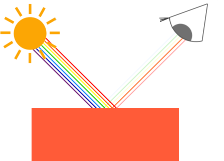
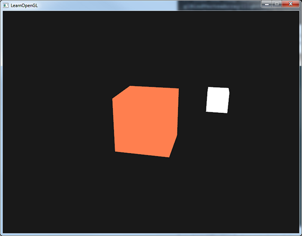

颜色
| 原文 | Colors |
|---|---|
| 作者 | JoeyDeVries |
| 翻译 | Geequlim, Krasjet |
| 校对 | AoZhang |
在前面的教程中我们已经简要提到过该如何在OpenGL中使用颜色(Color)，但是我们至今所接触到的都是很浅层的知识。本节我们将会更深入地讨论什么是颜色，并且还会为接下来的光照(Lighting)教程创建一个场景。
现实世界中有无数种颜色，每一个物体都有它们自己的颜色。我们需要使用（有限的）数值来模拟真实世界中（无限）的颜色，所以并不是所有现实世界中的颜色都可以用数值来表示的。然而我们仍能通过数值来表现出非常多的颜色，甚至你可能都不会注意到与现实的颜色有任何的差异。颜色可以数字化的由红色(Red)、绿色(Green)和蓝色(Blue)三个分量组成，它们通常被缩写为RGB。仅仅用这三个值就可以组合出任意一种颜色。例如，要获取一个珊瑚红(Coral)色的话，我们可以定义这样的一个颜色向量：
glm::vec3 coral(1.0f, 0.5f, 0.31f);
我们在现实生活中看到某一物体的颜色并不是这个物体真正拥有的颜色，而是它所

你可以看到，白色的阳光实际上是所有可见颜色的集合，物体吸收了其中的大部分颜色。它仅反射了代表物体颜色的部分，被反射颜色的组合就是我们所感知到的颜色（此例中为珊瑚红）。
Important
从技术上来说，情况会更复杂一些，但我们将在PBR章节中进一步探讨。
这些颜色反射的定律被直接地运用在图形领域。当我们在OpenGL中创建一个光源时，我们希望给光源一个颜色。在上一段中我们有一个白色的太阳，所以我们也将光源设置为白色。当我们把光源的颜色与物体的颜色值相乘，所得到的就是这个物体所反射的颜色（也就是我们所感知到的颜色）。让我们再次审视我们的玩具（这一次它还是珊瑚红），看看如何在图形学中计算出它的反射颜色。我们将这两个颜色向量作分量相乘，结果就是最终的颜色向量了：
glm::vec3 lightColor(1.0f, 1.0f, 1.0f);
glm::vec3 toyColor(1.0f, 0.5f, 0.31f);
glm::vec3 result = lightColor * toyColor; // = (1.0f, 0.5f, 0.31f);
我们可以看到玩具的颜色吸收了白色光源中很大一部分的颜色，但它根据自身的颜色值对红、绿、蓝三个分量都做出了一定的反射。这也表现了现实中颜色的工作原理。由此，我们可以定义物体的颜色为物体从一个光源反射各个颜色分量的大小。现在，如果我们使用绿色的光源又会发生什么呢？
glm::vec3 lightColor(0.0f, 1.0f, 0.0f);
glm::vec3 toyColor(1.0f, 0.5f, 0.31f);
glm::vec3 result = lightColor * toyColor; // = (0.0f, 0.5f, 0.0f);
可以看到，并没有红色和蓝色的光让我们的玩具来吸收或反射。这个玩具吸收了光线中一半的绿色值，但仍然也反射了一半的绿色值。玩具现在看上去是深绿色(Dark-greenish)的。我们可以看到，如果我们用绿色光源来照射玩具，那么只有绿色分量能被反射和感知到，红色和蓝色都不能被我们所感知到。这样做的结果是，一个珊瑚红的玩具突然变成了深绿色物体。现在我们来看另一个例子，使用深橄榄绿色(Dark olive-green)的光源：
glm::vec3 lightColor(0.33f, 0.42f, 0.18f);
glm::vec3 toyColor(1.0f, 0.5f, 0.31f);
glm::vec3 result = lightColor * toyColor; // = (0.33f, 0.21f, 0.06f);
可以看到，我们可以使用不同的光源颜色来让物体显现出意想不到的颜色。有创意地利用颜色其实并不难。
这些颜色的理论已经足够了，下面我们来构造一个实验用的场景吧。
创建一个光照场景
在接下来的教程中，我们将会广泛地使用颜色来模拟现实世界中的光照效果，创造出一些有趣的视觉效果。由于我们现在将会使用光源了，我们希望将它们显示为可见的物体，并在场景中至少加入一个物体来测试模拟光照的效果。
首先我们需要一个物体来作为被投光(Cast the light)的对象，我们将使用前面教程中的那个著名的立方体箱子。我们还需要一个物体来代表光源在3D场景中的位置。简单起见，我们依然使用一个立方体来代表光源（我们已拥有立方体的顶点数据是吧？）。
填一个顶点缓冲对象(VBO)，设定一下顶点属性指针和其它一些乱七八糟的东西现在对你来说应该很容易了，所以我们就不再赘述那些步骤了。如果你仍然觉得这很困难，我建议你复习之前的教程，并且在继续学习之前先把练习过一遍。
我们首先需要一个顶点着色器来绘制箱子。与之前的顶点着色器相比，容器的顶点位置是保持不变的（虽然这一次我们不需要纹理坐标了），因此顶点着色器中没有新的代码。我们将会使用之前教程顶点着色器的精简版：
#version 330 core
layout (location = 0) in vec3 aPos;
uniform mat4 model;
uniform mat4 view;
uniform mat4 projection;
void main()
{
gl_Position = projection * view * model * vec4(aPos, 1.0);
}
记得更新你的顶点数据和属性指针使其与新的顶点着色器保持一致（当然你可以继续留着纹理数据和属性指针。在这一节中我们将不会用到它们，但有一个全新的开始也不是什么坏主意）。
因为我们还要创建一个表示灯（光源）的立方体，所以我们还要为这个灯创建一个专门的VAO。当然我们也可以让这个灯和其它物体使用同一个VAO，简单地对它的model（模型）矩阵做一些变换就好了，然而接下来的教程中我们会频繁地对顶点数据和属性指针做出修改，我们并不想让这些修改影响到灯（我们只关心灯的顶点位置），因此我们有必要为灯创建一个新的VAO。
unsigned int lightVAO;
glGenVertexArrays(1, &lightVAO);
glBindVertexArray(lightVAO);
// 只需要绑定VBO不用再次设置VBO的数据，因为箱子的VBO数据中已经包含了正确的立方体顶点数据
glBindBuffer(GL_ARRAY_BUFFER, VBO);
// 设置灯立方体的顶点属性（对我们的灯来说仅仅只有位置数据）
glVertexAttribPointer(0, 3, GL_FLOAT, GL_FALSE, 3 * sizeof(float), (void*)0);
glEnableVertexAttribArray(0);
这段代码对你来说应该非常直观。现在我们已经创建了表示灯和被照物体箱子，我们只需要再定义一个片段着色器就行了：
#version 330 core
out vec4 FragColor;
uniform vec3 objectColor;
uniform vec3 lightColor;
void main()
{
FragColor = vec4(lightColor * objectColor, 1.0);
}
这个片段着色器从uniform变量中接受物体的颜色和光源的颜色。正如本节一开始所讨论的那样，我们将光源的颜色和物体（反射的）颜色相乘。这个着色器理解起来应该很容易。我们把物体的颜色设置为之前提到的珊瑚红色，并把光源设置为白色。
// 在此之前不要忘记首先 use 对应的着色器程序（来设定uniform）
lightingShader.use();
lightingShader.setVec3("objectColor", 1.0f, 0.5f, 0.31f);
lightingShader.setVec3("lightColor", 1.0f, 1.0f, 1.0f);
要注意的是，当我们修改顶点或者片段着色器后，灯的位置或颜色也会随之改变，这并不是我们想要的效果。我们不希望灯的颜色在接下来的教程中因光照计算的结果而受到影响，而是希望它能够与其它的计算分离。我们希望灯一直保持明亮，不受其它颜色变化的影响（这样它才更像是一个真实的光源）。
为了实现这个目标，我们需要为灯的绘制创建另外的一套着色器，从而能保证它能够在其它光照着色器发生改变的时候不受影响。顶点着色器与我们当前的顶点着色器是一样的，所以你可以直接把现在的顶点着色器用在灯上。灯的片段着色器给灯定义了一个不变的常量白色，保证了灯的颜色一直是亮的：
#version 330 core
out vec4 FragColor;
void main()
{
FragColor = vec4(1.0); // 将向量的四个分量全部设置为1.0
}
当我们想要绘制我们的物体的时候，我们需要使用刚刚定义的光照着色器来绘制箱子（或者可能是其它的物体）。当我们想要绘制灯的时候，我们会使用灯的着色器。在之后的教程里我们会逐步更新这个光照着色器，从而能够慢慢地实现更真实的效果。
使用这个灯立方体的主要目的是为了让我们知道光源在场景中的具体位置。我们通常在场景中定义一个光源的位置，但这只是一个位置，它并没有视觉意义。为了显示真正的灯，我们将表示光源的立方体绘制在与光源相同的位置。我们将使用我们为它新建的片段着色器来绘制它，让它一直处于白色的状态，不受场景中的光照影响。
我们声明一个全局vec3变量来表示光源在场景的世界空间坐标中的位置：
glm::vec3 lightPos(1.2f, 1.0f, 2.0f);
然后我们把灯位移到这里，然后将它缩小一点，让它不那么明显：
model = glm::mat4();
model = glm::translate(model, lightPos);
model = glm::scale(model, glm::vec3(0.2f));
绘制灯立方体的代码应该与下面的类似：
lampShader.use();
// 设置模型、视图和投影矩阵uniform
...
// 绘制灯立方体对象
glBindVertexArray(lightVAO);
glDrawArrays(GL_TRIANGLES, 0, 36);
请把上述的所有代码片段放在你程序中合适的位置，这样我们就能有一个干净的光照实验场地了。如果一切顺利，运行效果将会如下图所示：

没什么好看的是吗？但我保证在接下来的教程中它会变得更加有趣。
如果你觉得将上面的代码片段整合到一起非常困难，可以来这里看一下源代码，并仔细研究我的代码和注释。
我们现在已经对颜色有一定的了解了，并且已经创建了一个简单的场景供我们之后绘制动感的光照，我们可以进入下一节进行学习，真正的魔法即将开始！